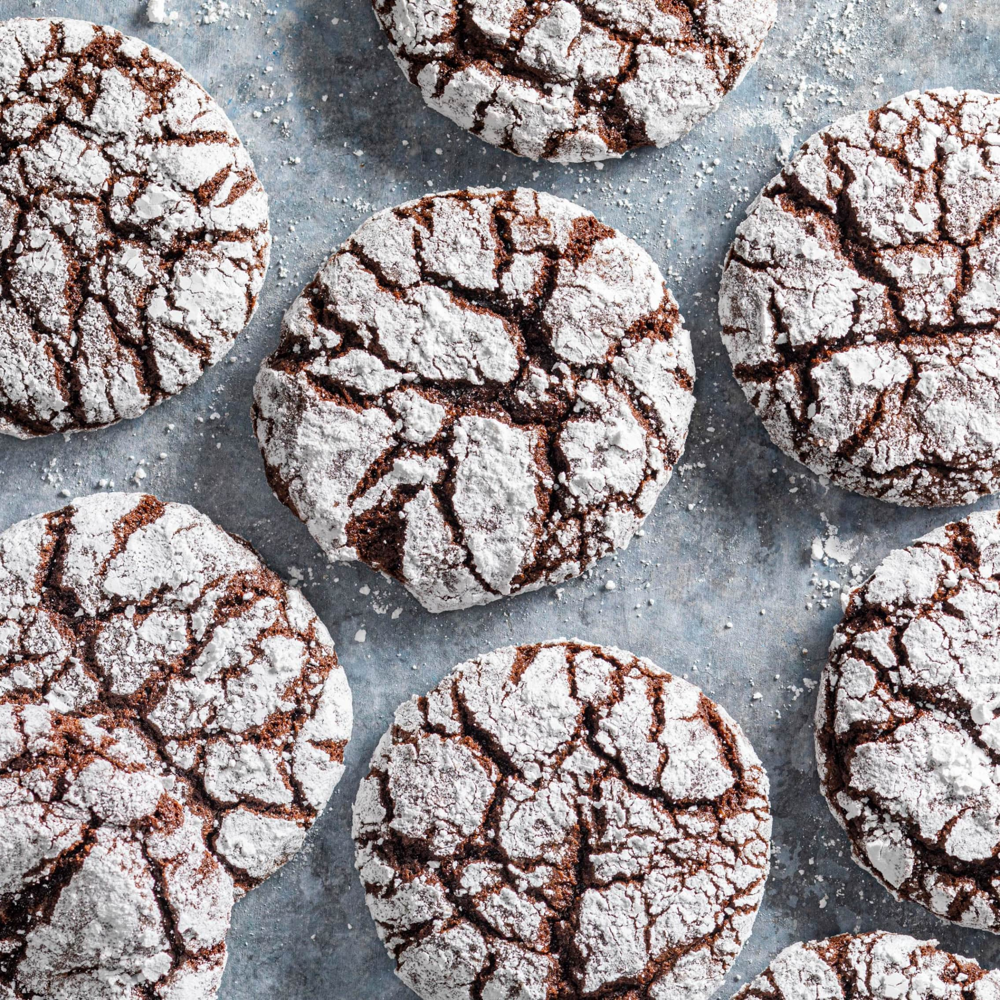

Chocolate Crinkle Cookies
Chocolate cookies with soft centers and a crackled sugar coating, made with cocoa, unsweetened chocolate, and optional espresso.

Ingredients
- 1 cup (5 ounces/142 grams) all-purpose flour
- 1/2 cup (1 1/2 ounces/43 grams) unsweetened cocoa powder
- 1 teaspoon baking powder
- 1/4 teaspoon baking soda
- 1/2 teaspoon salt
- 1 1/2 cups packed (10 1/2 ounces/298 grams) brown sugar
- 3 large eggs
- 4 teaspoons instant espresso powder (optional)
- 1 teaspoon vanilla extract
- 4 ounces (113 grams) unsweetened chocolate, chopped
- 4 tablespoons (57 grams) unsalted butter
- 1/2 cup (3 1/2 ounces/99 grams) granulated sugar
- 1/2 cup (2 ounces/57 grams) confectioners' sugar
Directions
- Place an oven rack in the center and preheat to 325°F. Cover 2 baking sheets with parchment. In a bowl, whisk the flour, cocoa, baking powder, baking soda, and salt (table salt), then reserve.
- In a large bowl, whisk the brown sugar with the eggs, optional espresso powder, and vanilla. Reserve.
- Put the chopped unsweetened chocolate and butter in a microwave-safe bowl. Microwave at half power for 2 to 3 minutes, pausing occasionally to stir, until melted.
- Whisk the melted chocolate mixture into the egg mixture. Fold in the dry ingredients just until the flour disappears. Leave the dough at room temperature for 10 minutes.
- Pour the granulated sugar into one shallow dish and the confectioners' sugar into another.
- Portion the dough into 2-tablespoon amounts (a #30 scoop may be used) and shape into balls. Coat each ball first in granulated sugar, then evenly in confectioners' sugar. Arrange 11 balls, evenly spaced, on each prepared sheet.
- Bake one sheet at a time for 9 to 12 minutes, turning the sheet halfway through. The cookies should be puffed and cracked, with edges just starting to set and centers still soft; the dough visible in the cracks should look raw or underbaked. Cool fully on the baking sheet before serving.